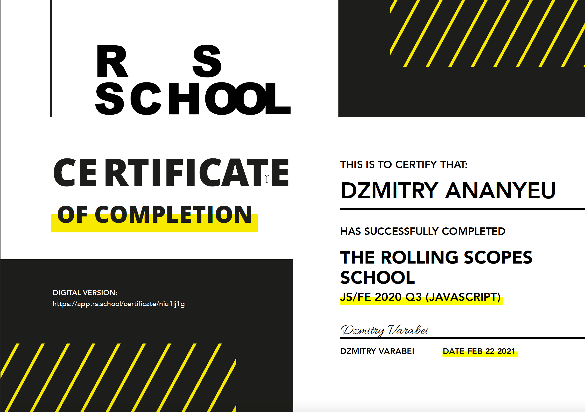
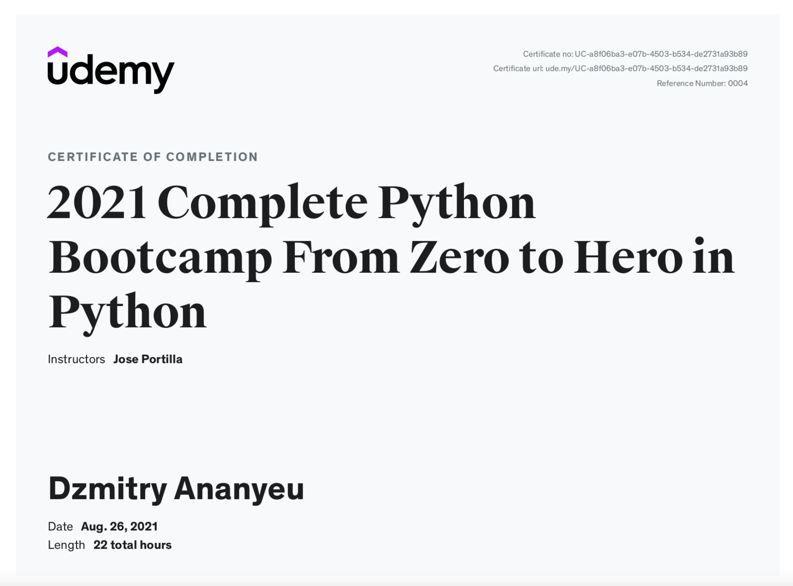
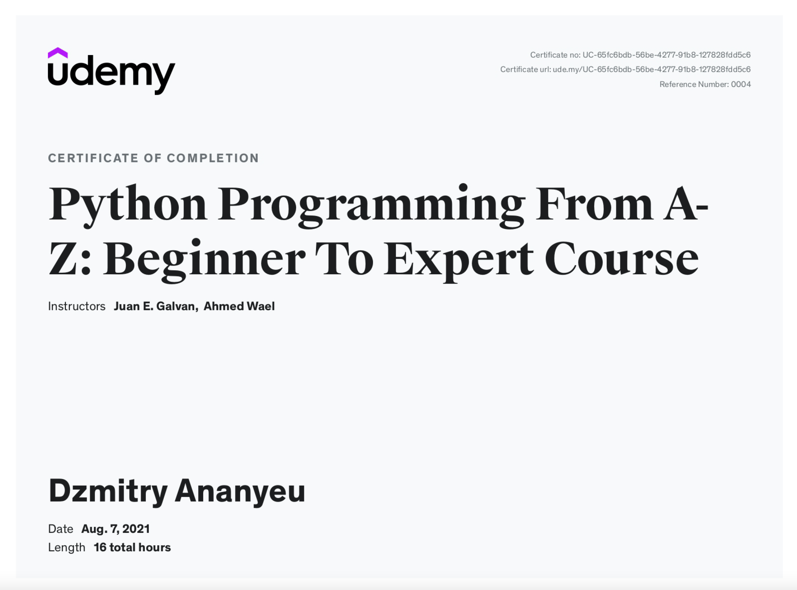
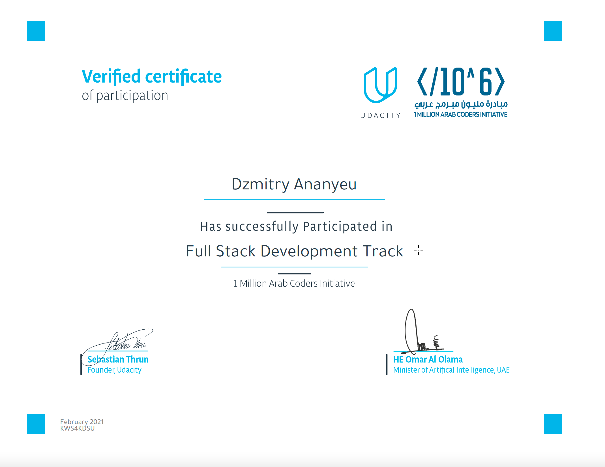
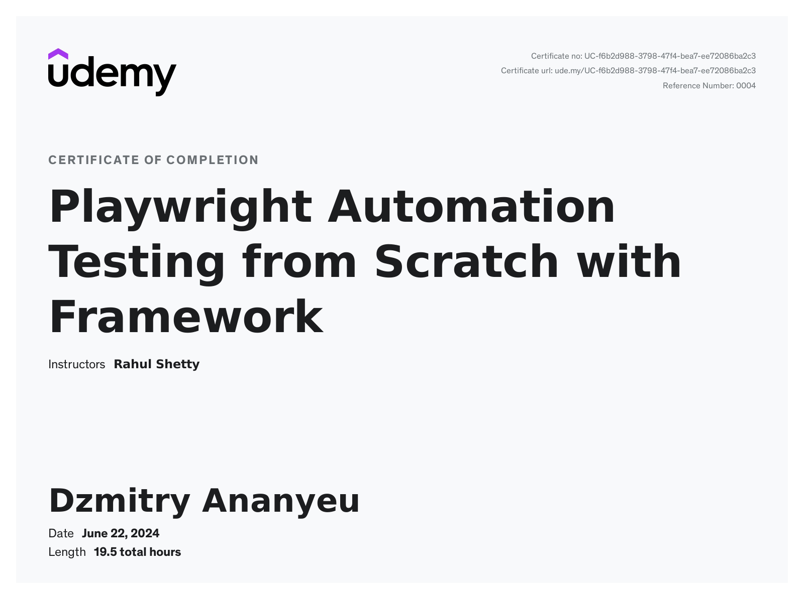
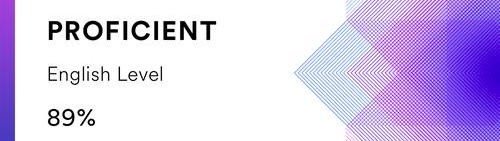

Dmitry Ananyev CV

- Name:
Dmitry Ananyev
- Contacts:
- Mail: dzmitry.ananyeu@gmail.com
- Linkedin: dmitry--ananyev
- Briefly About Myself:
I have more than 13 years of experience in the IT-sphere (QA).
In my current project, I work as a Head of QA || Automation Architect on the customer's side in Dubai (Emirates) - FinTech, e-commerce platform. My daily duties include big team management, the distribution of tasks between the testers, quality control tasks, gathering metrics, creating a test strategy/test plan (QA plan), coordinating a planned approach to testing, and communication with PM, devs. Participating in grooming sessions, planning, and daily, retrospective meetings, the same I review other aspects of work and suggest cases of how to improve it. For Automation: framework creation/supporting/tests creation if necessary. I can create automation from zero for any project with useful solutions and show you automation benefits. For example, except for normal checking functionality, I can create automation solutions for checking translations/test WEB benchmarks (CSS/JS/Image sizes/font qty)/test API performance/Accessibility/etc + automate daily routine work like creating reports/get team metrics/etc. I have experience for working with ReportPortal where possible to show full information about test-runs/common jira statistics/get and show info from SonarQube etc.
My Achievements on the current position (I created the full Automation platform from 0):- API Automation framework.
- WEB Automation framework (Chrome/Firefox/Safari/Edge)
- MOBILE Automation framework (Native apps/Web mobile view).
- PERFORMANCE solution for checking API speed. For WEB: benchmarks: JS/CSS/Fonts/Images size/etc.
- Created a solution for Installing the framework in 2 clicks across different projects.
- Configured Portal with 1 place with all statistics.
- Created solution for taking all Dev statistics: quality of developed task/qty of reopened/etc.
- Integrated AI for helping with documentation/TCs creation.
- Configured CI: Jenkins/GitLab/Github for running and taking artifacts: Allure report/Performance results.
- Built clear doc that can be used for new QA with 0 knowledge and from DEV side for running and analyzing results.
My built Quality Gate helped:- To be sure 100% that all previously built func work as expected at any time.
- Fully reduce the time to check old functionality.
- Helps Devs to check their code before pushing it to Test Env. (Devs know issues before QA will start to spend time on testing).
- Skills:
Technical stack:
- Primary development language: Python (full automation knowledge for any WEB/API/MOBILE projects). No issues with JavaScript/Java. I can quickly start to work with it. Additional frameworks experience: Playwright/TestNG and Junit. For development: JS (Basic development knowledge: can fix UI bugs).
For python:- Tools/libraries for working with interfaces (API, database, GUI, etc.) - pytest, allure, hamcrest, axe, locust;
- Tools for organizing and running tests (PyTest, RobotFramework, etc.) - pytest;
- Structure and tools for a centralized runner (for example, Jenkins CI) - pipeline, Jenkins CI;
- Report generation tools - allure, html;
- Run autotests on pipeline(GIT), mobile devices (Android, iOS: via Appium).
For JavaScript:- JS;
- HTML;
- CSS/SASS;
- REACT (a little experience);
- TS (a little experience).
Performance knowledges: Jmeter/Locust/Requests + Selenium.
My responsibilities on current projects with Python language as a QA Automation Lead:- Communication between governments/customers and journeys about releases;
- Quality control of more than 5 projects/journeys -> 15+ people;
- Quality control: Front-end/Back-end (automation scripts) (Desktop/Mobile view), Back-end(API), responsiveness, Native apps;
- Interview with newcomers;
- Creating new solutions on Python: framework/testing solutions/pipeline configuration/QA dashboard (ReportPortal) configuration for viewing test results.
- Code examples/Projects:
I can't show python code, because it is real projects/solutions which forbidden to share. About JavaScript - My final projects after courses:
- Education:
- Education organization: The Belarusian State Academy of Telecommunications;
- Speciality: Telecommunications networks;
- Qualification awarded: Telecommunications engineer.
Udemy courses:Certificates:-





- English:
English - Upper-intermediate (according to the online test at EFset Logo www.efset.org). I live in Emirates more 3 years, I don't have any issues with communication.
